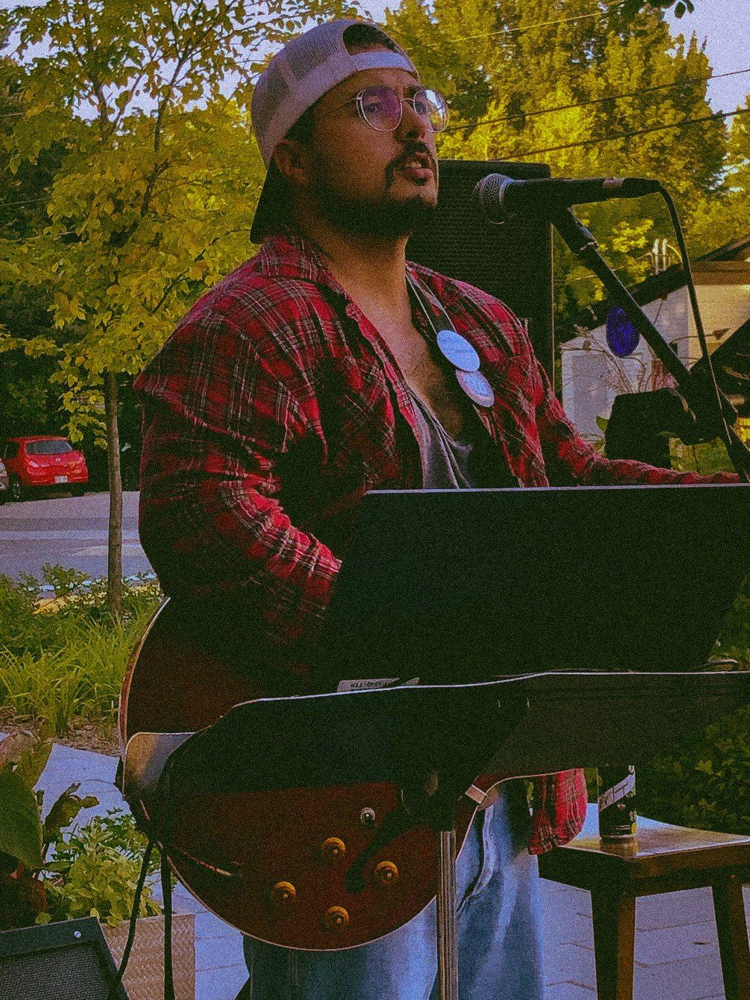
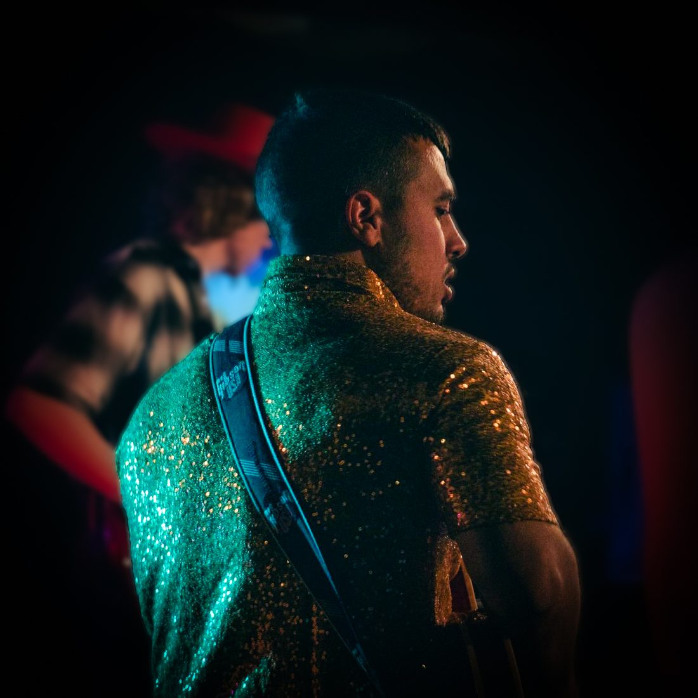

TOM
AuteurCompositeurInterprèteSingerSongwriterPerformer
Salut !
Je suis un auteur-compositeur et interprète du Québec. J'ai commencé à jouer du country en 2017 pour avoir du plaisir avec mes amis lors des compétitions équestres, puis je me suis mis à composer par nécessité, pour m'aider à passer au travers d'une situation difficile.
J'écris d'abord pour moi-même. Mais, évidemment, j'espère que ma musique vous plaira également.
Hi!
I'm a singer-songwriter from Quebec. I started playing country music in 2017 to have fun with my friends at horse shows, then I started writing songs out of necessity, to help me get through a difficult time.
I write for myself first. But of course, I hope you'll enjoy my music too.
★ Dernier singleLatest single ★
Suivez-moiFollow me
★ Prochains spectaclesUpcoming shows ★
Aucune date annoncée pour le moment. Restez à l'affût !No dates announced yet. Stay tuned!
Réserver un spectacleBook a showMusiqueMusic
- Run Like a Thief2026
- Sick Witches2025
- Carry On2024
- I'll Go2024
En scèneOn stage



Aussi par Tom Tom MusicAlso by Tom Tom Music
MusiDev
Une app éducative pour développer l'oreille, lire la musique et pratiquer son instrument, avec des exercices générés au hasard.
An educational app to train your ear, read music and practise your instrument, with randomly generated exercises.
Découvrir MusiDevDiscover MusiDevMe joindreContact me
Spectacles, collaborations ou simplement pour jaser musique : écris-moi.Shows, collaborations or just to talk music: drop me a line.
tomthivierge.artiste@gmail.com